# import kagglehub
# # Download latest version
# path = kagglehub.dataset_download("jahnavipaliwal/mountains-vs-beaches-preference")
# print("Path to dataset files:", path)Example Analysis
Setup
Here, I will outline my goals for this analysis, load the data, preprocess it, share the data dictionary, etc.
Guiding Question
Are there any characteristics that can help us predict whether a given person prefers mountains or beaches? (i.e. could we predict the answer to the question ‘are you a mountain or a beach person’)
Intended Audience
The intended audience is anyone who feels strongly about mountains or beaches.
Check out these mountains next to a beach. How could you decide?
Link to Data
https://www.kaggle.com/datasets/jahnavipaliwal/mountains-vs-beaches-preference
I have moved the file to the data folder
library(dplyr)
Attaching package: 'dplyr'The following objects are masked from 'package:stats':
filter, lagThe following objects are masked from 'package:base':
intersect, setdiff, setequal, unionlibrary(tidyr)
library(ggplot2)
data = read.csv('data/mountains_vs_beaches_preferences.csv')
cat(' there are', nrow(data), "participatns, and", ncol(data) - 1, "predictors") there are 52444 participatns, and 13 predictorsData Dictionary
data_dictionary = read.csv('data/data_dictionary.csv')
knitr::kable(data_dictionary)| variables | type | description |
|---|---|---|
| Age | integer | Age of the individual (numerical). |
| Gender | character | Gender identity of the individual (categorical: male, female, non-binary). |
| Income | integer | Annual income of the individual (numerical). |
| Education_Level | character | Highest level of education attained (categorical: high school, bachelor, master, doctorate). |
| Travel_Frequency | integer | Number of vacations taken per year (numerical). |
| Preferred_Activities | character | Activities preferred by individuals during vacations (categorical: hiking, swimming, skiing, sunbathing). |
| Vacation_Budget | integer | Budget allocated for vacations (numerical). |
| Location | character | Type of residence (categorical: urban, suburban, rural). |
| Proximity_to_Mountains | integer | Distance from the nearest mountains (numerical, in miles). |
| Proximity_to_Beaches | integer | Distance from the nearest beaches (numerical, in miles). |
| Favorite_Season | character | Preferred season for vacations (categorical: summer, winter, spring, fall). |
| Pets | integer | Indicates whether the individual owns pets (binary: 0 = No, 1 = Yes). |
| Environmental_Concerns | integer | Indicates whether the individual has environmental concerns (binary: 0 = No, 1 = Yes). |
| Preference | integer | Indicates whether the individual prefers mountains or beaches (binary: 0 = beaches, 1 = mountains) |
Analysis
The actual analysis starts here. I want to use logistic regression to predict the label of 1-mountains or 0-beaches. To do this, I must respect the assumptions made for logistic regression, which I will tackle in the Data wrangling/Preprocessing section.
Data wrangling/Preprocessing
Here are the assumptions:
- Binary Outcome Variable: Logistic regression is used for binary classification, so the dependent variable should be binary (e.g., 0 or 1, True or False).
This assumption is met by our dataset.
- Independence of Observations: The observations should be independent of each other. No observation should influence another.
This assumption should be met, based on how the data was collected. Hopefully the participants are from different families.
- No Perfect Multicollinearity: The predictor variables should not be perfectly correlated with each other. High multicollinearity can make it difficult to determine the individual effect of each predictor.
We will need to check this assumption.
- Large Sample Size: Logistic regression requires a sufficiently large sample size to produce reliable results.
With a sample size of 5244 and 13 predictors, this assumption is more than met. In fact, we can even consider adding a couple of features from nonlinear combinations of our original 13 predictors, and still be fine.
- No Significant Outliers: Outliers can influence the model, since Logistic regression minimizes a loss function - and outliers introduce too much loss that the model can try to correct for.
We will need to check this assumption.
- Observations Need to be Properly Distributed Across the Levels of the Dependent Variable: There should be a reasonable number of cases in both categories of the dependent variable. Extreme imbalances can lead to a biased model.
We will need to check this assumption.
https://www.statisticssolutions.com/free-resources/directory-of-statistical-analyses/assumptions-of-logistic-regression/
features = dplyr::select(data, -Preference)
head(features) Age Gender Income Education_Level Travel_Frequency Preferred_Activities
1 56 male 71477 bachelor 9 skiing
2 69 male 88740 master 1 swimming
3 46 female 46562 master 0 skiing
4 32 non-binary 99044 high school 6 hiking
5 60 female 106583 high school 5 sunbathing
6 25 male 110588 doctorate 3 sunbathing
Vacation_Budget Location Proximity_to_Mountains Proximity_to_Beaches
1 2477 urban 175 267
2 4777 suburban 228 190
3 1469 urban 71 280
4 1482 rural 31 255
5 516 suburban 23 151
6 2895 urban 6 47
Favorite_Season Pets Environmental_Concerns
1 summer 0 1
2 fall 0 1
3 winter 0 0
4 summer 1 0
5 winter 1 1
6 fall 0 1In order to use our categorical features, we must convert them to factors. Moreover, some of our categorial features are ordinal, such as the education variable.
features <- features %>%
mutate(across(where(is.character), as.factor))
education_levels <- c("high school", "bachelor", "master", "doctorate")
features <- features %>%
mutate(Education_Level = factor(features$Education_Level, levels = education_levels, ordered = TRUE))
str(features)'data.frame': 52444 obs. of 13 variables:
$ Age : int 56 69 46 32 60 25 38 56 36 40 ...
$ Gender : Factor w/ 3 levels "female","male",..: 2 2 1 3 1 2 2 3 2 3 ...
$ Income : int 71477 88740 46562 99044 106583 110588 22245 109411 22531 90840 ...
$ Education_Level : Ord.factor w/ 4 levels "high school"<..: 2 3 3 1 1 4 2 2 3 1 ...
$ Travel_Frequency : int 9 1 0 6 5 3 1 8 6 1 ...
$ Preferred_Activities : Factor w/ 4 levels "hiking","skiing",..: 2 4 2 1 3 3 4 3 4 4 ...
$ Vacation_Budget : int 2477 4777 1469 1482 516 2895 4994 3656 2408 4044 ...
$ Location : Factor w/ 3 levels "rural","suburban",..: 3 2 3 1 2 3 1 3 2 1 ...
$ Proximity_to_Mountains: int 175 228 71 31 23 6 157 210 218 271 ...
$ Proximity_to_Beaches : int 267 190 280 255 151 47 225 166 263 15 ...
$ Favorite_Season : Factor w/ 4 levels "fall","spring",..: 3 1 4 3 4 1 1 4 3 3 ...
$ Pets : int 0 0 0 1 1 0 0 1 1 1 ...
$ Environmental_Concerns: int 1 1 0 0 1 1 1 0 1 1 ...Multicollinearity
We will plot all of the pairwise correlations in a correlation matrix. In our cases, we will remove a variable if there is a correlation of 0.9 or higher, which is essentially perfectly correlated in practice.
numeric_features <- features %>%
mutate(across(where(is.factor), as.numeric))
cor_matrix <- stats::cor(numeric_features, use = "complete.obs")
corrplot::corrplot(cor_matrix, method = "color", tl.cex = 0.7, addCoef.col = "black")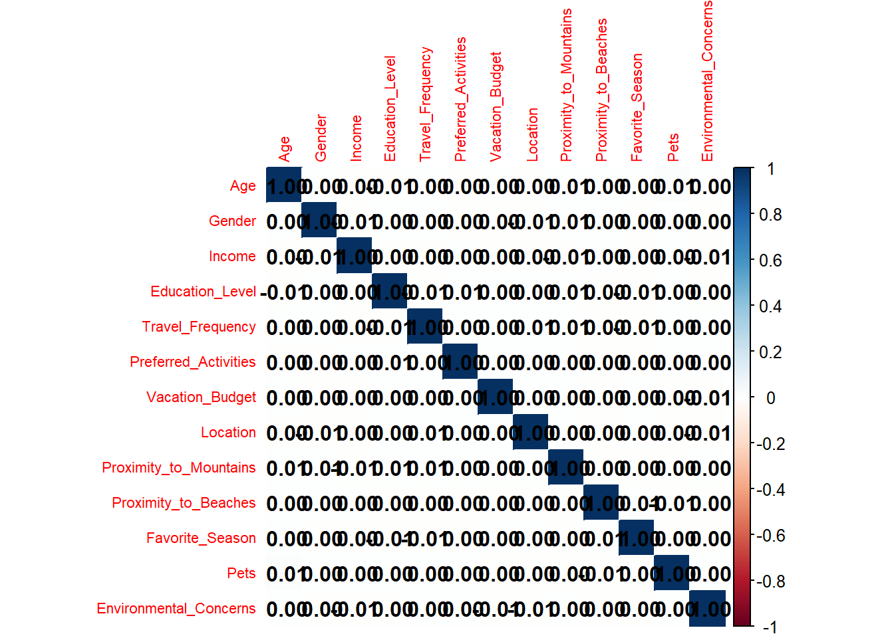
We see that none of our variables are perfectly correlated, so this is great!
Outlier Analysis
Outliers only apply to our numerical variables, such as Age, Income, Travel_Frequency, Vacation_Budget, Proximity_to_Mountains, Proximity_to_Beaches.
We will identify values as outliers if they meet the condition: \[|value - median| > 1.5 \cdot IQR\] where IQR is the interquartile range.
First, it may help us to just look at the distributions of the numerical variables - I will plot histograms separately because of bin width issues.
numeric_features = dplyr::select(data, where(is.numeric)) %>%
select(where(~ n_distinct(.) > 2))ggplot(numeric_features, aes(x = Age)) +
geom_histogram(binwidth = 5) +
labs(title = "Histogram of Participant Age Distribution")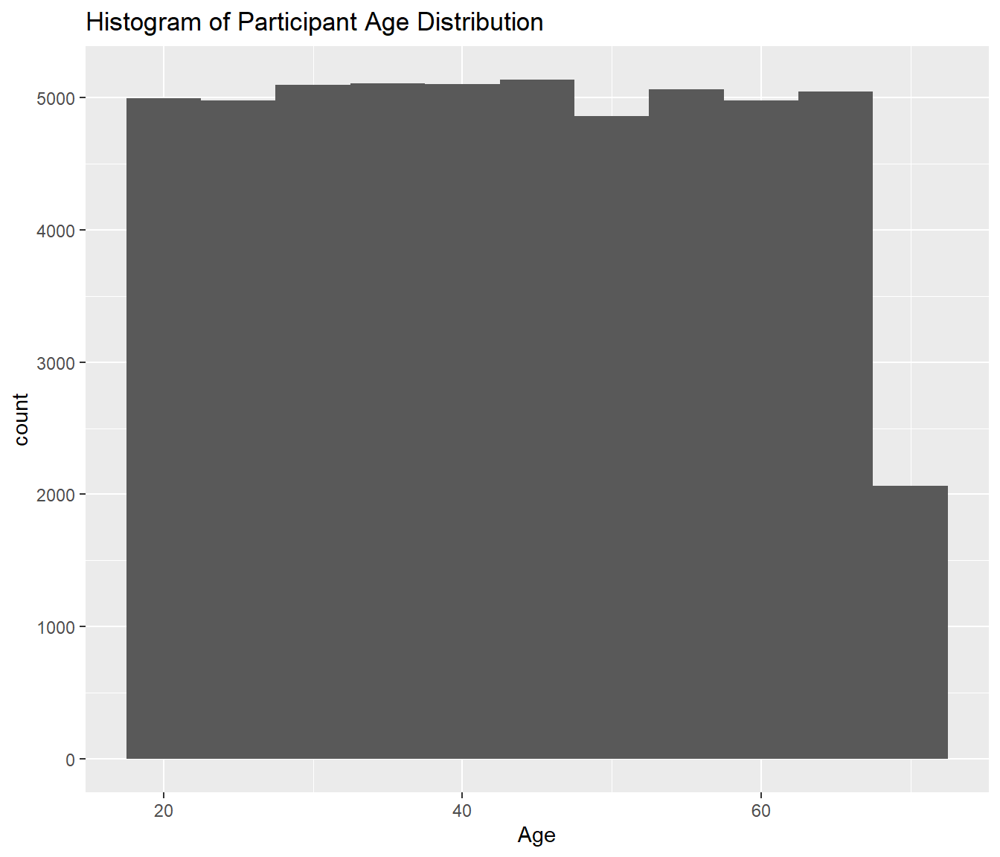
ggplot(numeric_features, aes(x = Income)) +
geom_histogram(binwidth = 10000) +
labs(title = "Histogram of Participant Income Distribution")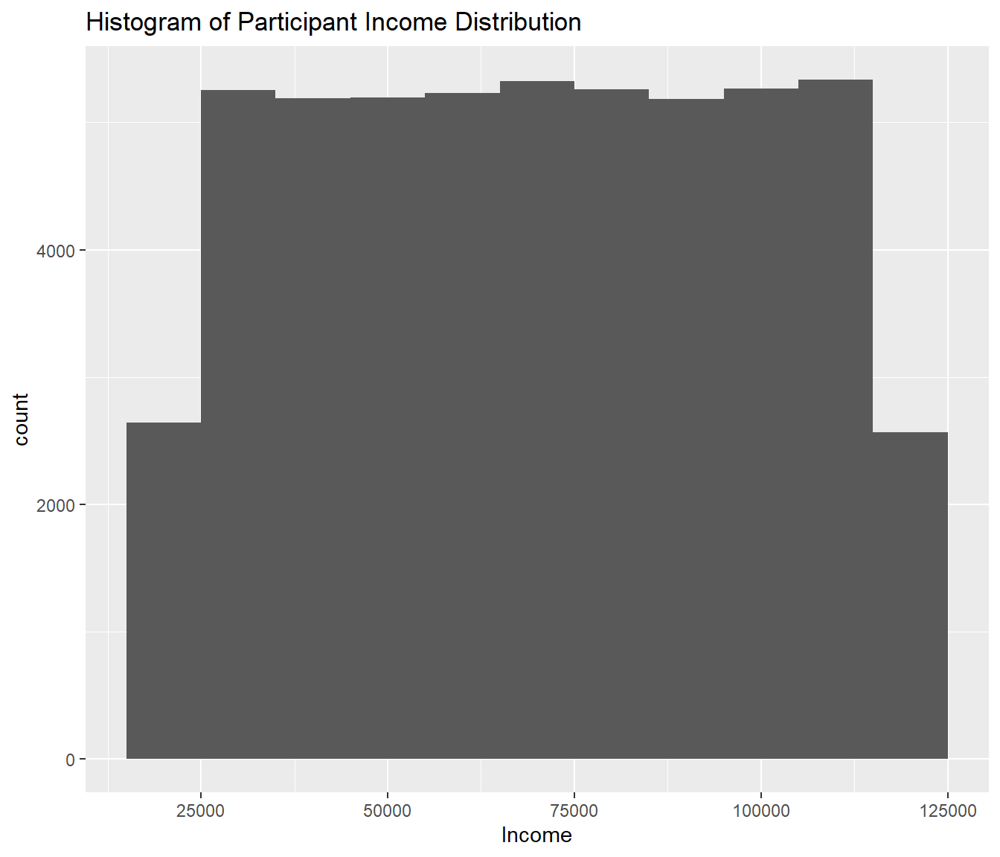
ggplot(numeric_features, aes(x = Travel_Frequency)) +
geom_histogram(binwidth = 1) +
labs(title = "Histogram of Participant Travel Frequency Distribution")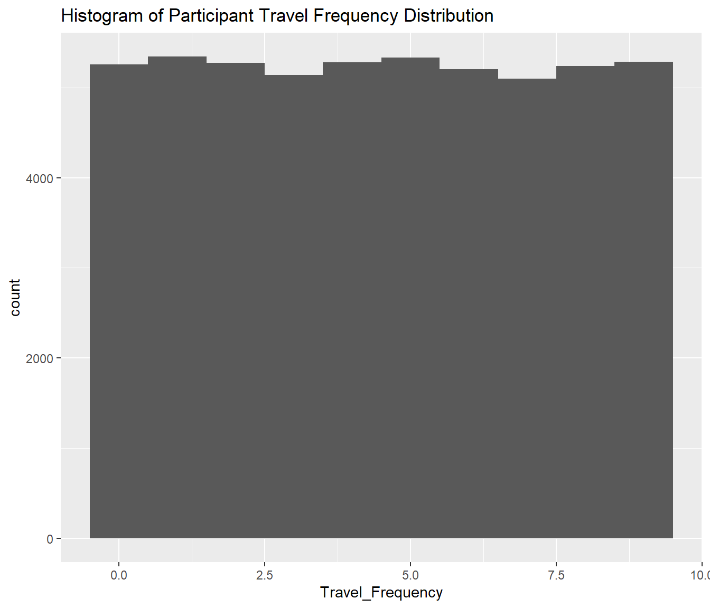
ggplot(numeric_features, aes(x = Vacation_Budget)) +
geom_histogram(binwidth = 250) +
labs(title = "Histogram of Participant Vacation Budget Distribution")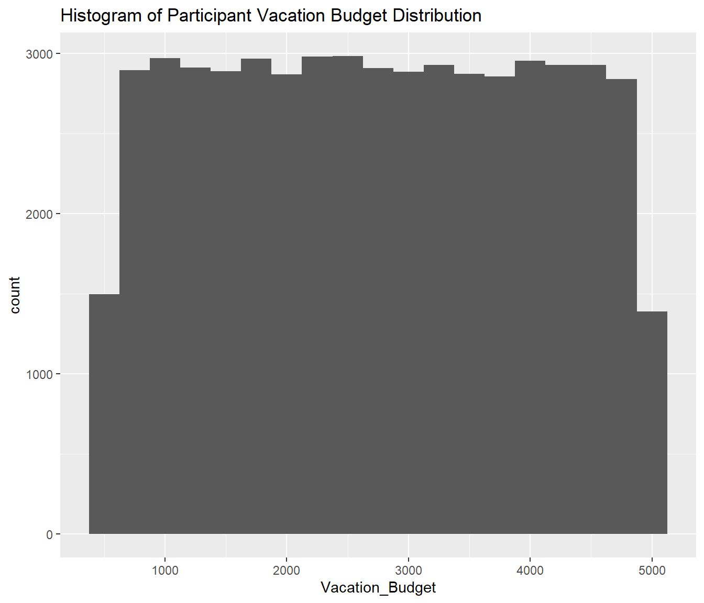
ggplot(numeric_features, aes(x = Proximity_to_Mountains)) +
geom_histogram(binwidth = 50) +
labs(title = "Histogram of Participant Proximity to Mountains Distribution")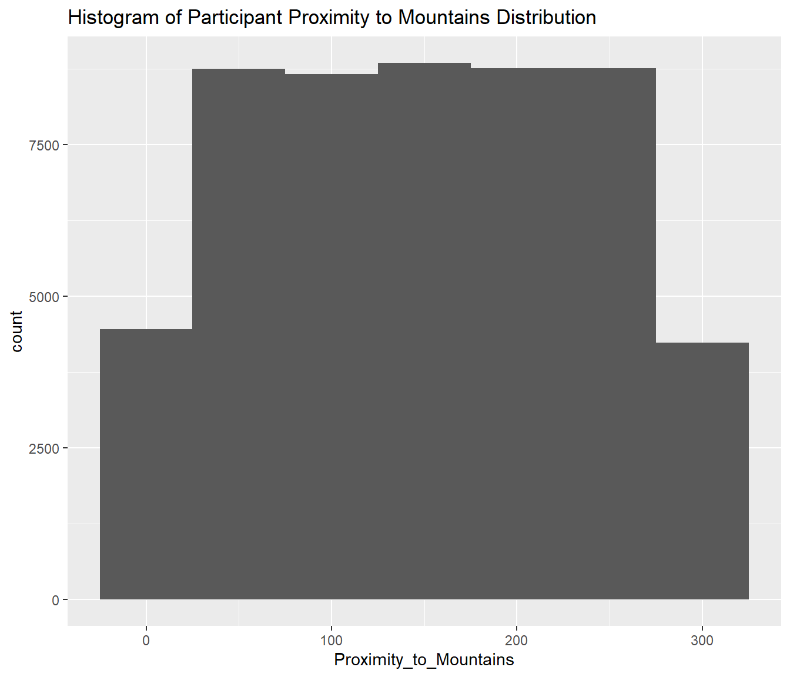
ggplot(numeric_features, aes(x = Proximity_to_Beaches)) +
geom_histogram(binwidth = 50) +
labs(title = "Histogram of Participant Proximity to Beaches Distribution")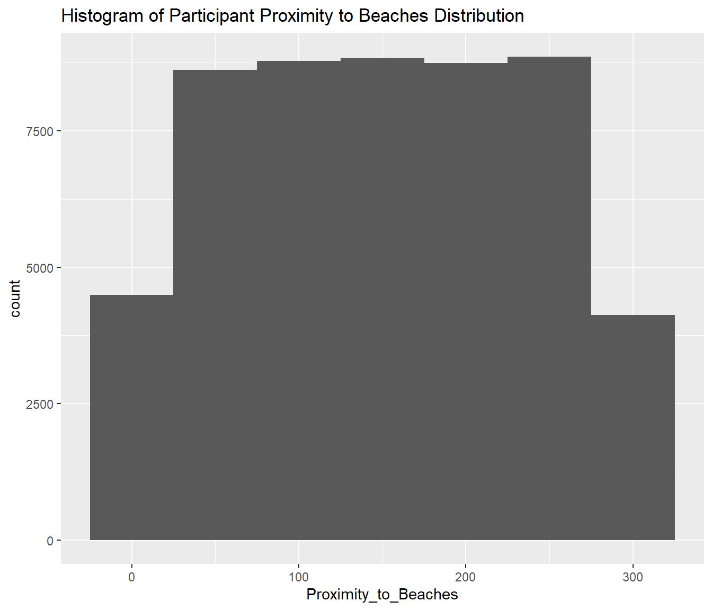
Note
Ok…these values are very odd. I am going to assume that this data set is either already preprocessed, or it’s entirely synthetic data.
identify_outliers <- function(x) {
IQR <- IQR(x, na.rm = TRUE)
median <- median(x, na.rm = TRUE)
lower_bound <- median - 1.5 * IQR
upper_bound <- median + 1.5 * IQR
return(x < lower_bound | x > upper_bound)
}
outliers <- numeric_features %>%
mutate(across(everything(), identify_outliers))
print(colSums(outliers)) Age Income Travel_Frequency
0 0 0
Vacation_Budget Proximity_to_Mountains Proximity_to_Beaches
0 0 0 man this dataset actually sucks (too good, no preprocessing for me to do) there are zero outliers. This is 99% synthetic data, and for whatever reason it was generated from uniform distributions, or something like that.
Observation distributions
We need to ensure that we have an approximately equal number of mountain and beach enjoyers. Something in the neighborhood of 50-50 would be preferred. A pie chart should do the trick.
pie_data <- data.frame(
group=c('mountains', 'beaches'),
value=c(sum(data$Preference == '1'), sum(data$Preference == '0'))
)
ggplot(pie_data, aes(x="", y=value, fill=group)) +
geom_bar(stat="identity", width=1) +
coord_polar("y", start=0)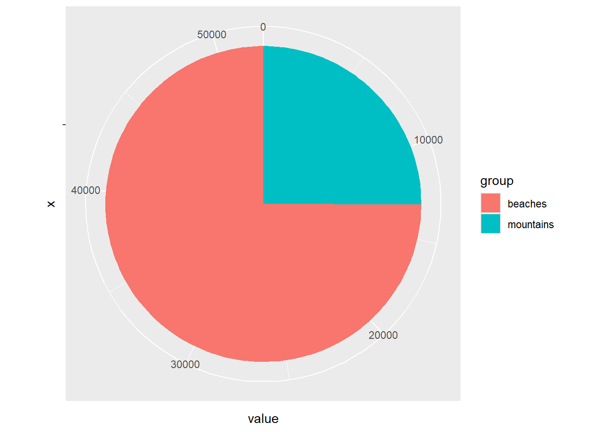
cat('number of mountain enjoyers:', sum(data$Preference == '1'), '\nnumber of beach enjoyers:', sum(data$Preference == '0'), '\n')number of mountain enjoyers: 13148
number of beach enjoyers: 39296
Important
AHA! Ok, that’s not good, we can’t have this imbalanced of classes. I’m just going to randomly sample 13148 beach enjoyers.
num_mountain_enjoyers <- sum(data$Preference == '1')
beach_sample <- data %>%
filter(Preference == '0') %>%
sample_n(num_mountain_enjoyers)
balanced_data <- data %>%
filter(Preference == '1') %>%
bind_rows(beach_sample)
num_mountain_enjoyers <- sum(balanced_data$Preference == '1')
num_beach_enjoyers <- sum(balanced_data$Preference == '0')
cat('Number of mountain enjoyers:', num_mountain_enjoyers, '\nNumber of beach enjoyers:', num_beach_enjoyers, '\n')Number of mountain enjoyers: 13148
Number of beach enjoyers: 13148 pie_data <- data.frame(
group = c('mountains', 'beaches'),
value = c(num_mountain_enjoyers, num_beach_enjoyers)
)
ggplot(pie_data, aes(x = "", y = value, fill = group)) +
geom_bar(stat = "identity", width = 1) +
coord_polar("y", start = 0) +
labs(title = "Balanced Preference Distribution")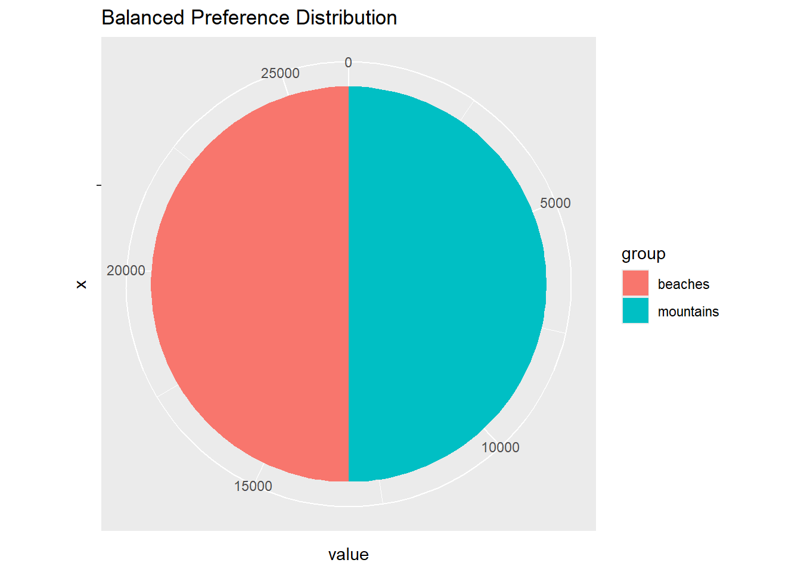
print(pie_data) group value
1 mountains 13148
2 beaches 13148Feature Engineering
Normalizing the data is generally a good thing to do. Not super necessary here, but I will do it anyways. https://www.turing.com/kb/effects-of-normalization-techniques-on-logistic-regression-in-data-science
normalized_data <- balanced_data %>%
select(where(is.numeric)) %>%
select(where(~ n_distinct(.) > 2)) %>%
mutate(across(everything(), ~ (.-mean(., na.rm = TRUE))/sd(., na.rm = TRUE)))
print(sd(normalized_data$Income))[1] 1categorical_data <- balanced_data %>% select(!where(is.numeric) | where(~ n_distinct(.) == 2))
normalized_data <- bind_cols(categorical_data, normalized_data)
head(normalized_data) Gender Education_Level Preferred_Activities Location Favorite_Season Pets
1 male bachelor skiing urban summer 0
2 female master skiing urban winter 0
3 non-binary high school hiking rural summer 1
4 female bachelor hiking suburban summer 1
5 male high school hiking suburban fall 0
6 female master skiing urban fall 1
Environmental_Concerns Preference Age Income Travel_Frequency
1 1 1 0.8320239 0.05233121 1.5711838
2 0 1 0.1648052 -0.81250781 -1.5655376
3 0 1 -0.7693008 1.00922535 0.5256100
4 1 1 -0.1688041 -0.59618524 0.8741346
5 0 1 0.8987457 -0.14465701 -0.5199638
6 1 1 -0.1688041 1.03581442 -0.8684884
Vacation_Budget Proximity_to_Mountains Proximity_to_Beaches
1 -0.20029233 0.49358718 1.1864101
2 -0.97974101 -0.73216912 1.3402106
3 -0.96968860 -1.20361385 1.0444405
4 -0.88540297 -0.03678814 1.0326097
5 -0.09976819 -1.14468326 1.0799329
6 0.07266936 -0.66145241 0.5002235Now, need to convert this subset of the data into factors where appropriate
normalized_data <- normalized_data %>%
mutate(across(where(is.character), as.factor))
education_levels <- c("high school", "bachelor", "master", "doctorate")
normalized_data <- normalized_data %>%
mutate(Education_Level = factor(Education_Level, levels = education_levels, ordered = TRUE))
str(normalized_data)'data.frame': 26296 obs. of 14 variables:
$ Gender : Factor w/ 3 levels "female","male",..: 2 1 3 1 2 1 3 1 2 1 ...
$ Education_Level : Ord.factor w/ 4 levels "high school"<..: 2 3 1 2 1 3 1 1 1 1 ...
$ Preferred_Activities : Factor w/ 4 levels "hiking","skiing",..: 2 2 1 1 1 2 2 1 2 2 ...
$ Location : Factor w/ 3 levels "rural","suburban",..: 3 3 1 2 2 3 2 2 2 1 ...
$ Favorite_Season : Factor w/ 4 levels "fall","spring",..: 3 4 3 3 1 1 3 2 2 2 ...
$ Pets : int 0 0 1 1 0 1 0 1 0 1 ...
$ Environmental_Concerns: int 1 0 0 1 0 1 1 0 0 0 ...
$ Preference : int 1 1 1 1 1 1 1 1 1 1 ...
$ Age : num 0.832 0.165 -0.769 -0.169 0.899 ...
$ Income : num 0.0523 -0.8125 1.0092 -0.5962 -0.1447 ...
$ Travel_Frequency : num 1.571 -1.566 0.526 0.874 -0.52 ...
$ Vacation_Budget : num -0.2003 -0.9797 -0.9697 -0.8854 -0.0998 ...
$ Proximity_to_Mountains: num 0.4936 -0.7322 -1.2036 -0.0368 -1.1447 ...
$ Proximity_to_Beaches : num 1.19 1.34 1.04 1.03 1.08 ...numeric_features = dplyr::select(normalized_data, where(is.numeric)) %>%
select(where(~ n_distinct(.) > 2))
long_data <- numeric_features %>%
pivot_longer(cols = everything(), names_to = "variable", values_to = "value")
ggplot(long_data, aes(x = value)) +
geom_histogram(binwidth = 0.5, fill = "steelblue", color = "white") +
facet_wrap(~variable, scales = "free") +
labs(title = "Histograms of Numeric Features", x = "Value", y = "Frequency", caption = "Facet plot for the normalized distributions") + theme(plot.caption = element_text(hjust = 0.5))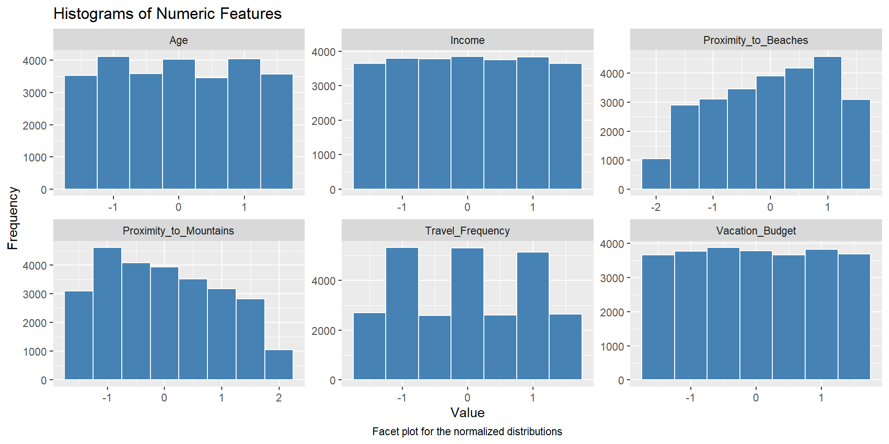
Logistic Regression
log_reg = glm(formula = Preference ~ ., family = "binomial", data = normalized_data)Warning: glm.fit: algorithm did not convergeWarning: glm.fit: fitted probabilities numerically 0 or 1 occurredsummary(log_reg)
Call:
glm(formula = Preference ~ ., family = "binomial", data = normalized_data)
Coefficients:
Estimate Std. Error z value Pr(>|z|)
(Intercept) 7.980e+02 1.684e+03 0.474 0.636
Gendermale 8.936e-02 7.218e+01 0.001 0.999
Gendernon-binary 3.970e-01 6.739e+01 0.006 0.995
Education_Level.L -3.071e-01 6.354e+01 -0.005 0.996
Education_Level.Q 7.364e-02 5.803e+01 0.001 0.999
Education_Level.C -8.440e-02 5.498e+01 -0.002 0.999
Preferred_Activitiesskiing -3.996e-01 5.970e+01 -0.007 0.995
Preferred_Activitiessunbathing -7.038e+03 1.491e+04 -0.472 0.637
Preferred_Activitiesswimming -7.111e+03 1.506e+04 -0.472 0.637
Locationsuburban -1.909e-01 6.715e+01 -0.003 0.998
Locationurban -2.248e-01 6.897e+01 -0.003 0.997
Favorite_Seasonspring -3.175e-01 7.446e+01 -0.004 0.997
Favorite_Seasonsummer 3.329e-01 9.048e+01 0.004 0.997
Favorite_Seasonwinter -5.673e-02 7.383e+01 -0.001 0.999
Pets 4.011e-01 5.770e+01 0.007 0.994
Environmental_Concerns -3.239e-01 5.494e+01 -0.006 0.995
Age -1.037e-01 2.929e+01 -0.004 0.997
Income 8.309e-02 2.927e+01 0.003 0.998
Travel_Frequency 9.272e-02 2.752e+01 0.003 0.997
Vacation_Budget -1.164e-01 2.729e+01 -0.004 0.997
Proximity_to_Mountains -2.044e+03 4.313e+03 -0.474 0.636
Proximity_to_Beaches 2.036e+03 4.298e+03 0.474 0.636
(Dispersion parameter for binomial family taken to be 1)
Null deviance: 3.6454e+04 on 26295 degrees of freedom
Residual deviance: 1.1439e-03 on 26274 degrees of freedom
AIC: 44.001
Number of Fisher Scoring iterations: 25Oh wow that’s pretty sad…I think I did not select the greatest dataset here. Nevertheless, we should plot some visuals.
normalized_data$predicted_prob <- predict(log_reg, type = "response")
ggplot(normalized_data, aes(x = predicted_prob, fill = as.factor(Preference))) +
geom_histogram(binwidth = 0.05, position = "identity", alpha = 0.6) +
labs(title = "Predicted Probability Distribution by Preference",
x = "Predicted Probability", y = "Count", fill = "Preference") +
theme_minimal()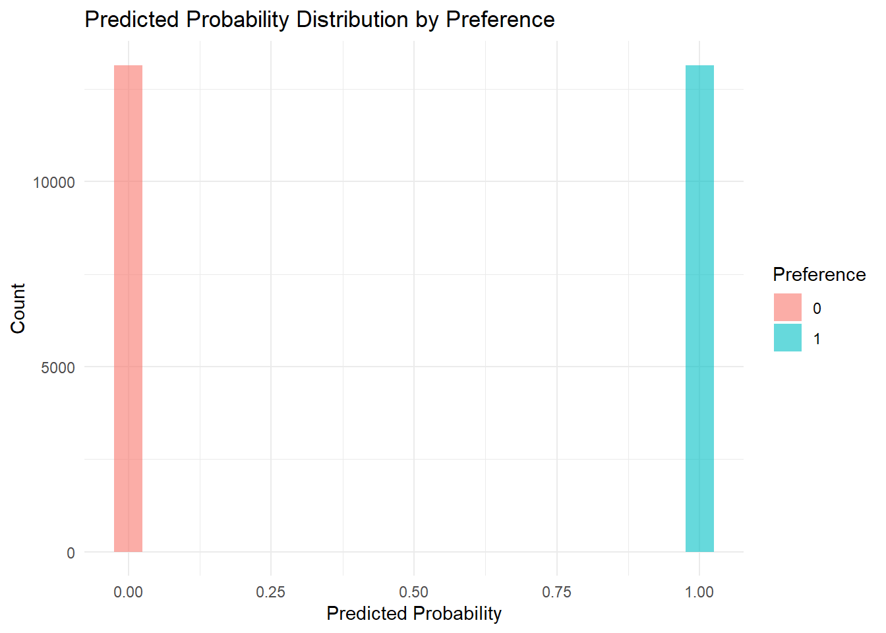
library(pROC)Type 'citation("pROC")' for a citation.
Attaching package: 'pROC'The following objects are masked from 'package:stats':
cov, smooth, varroc_obj <- roc(normalized_data$Preference, normalized_data$predicted_prob)Setting levels: control = 0, case = 1Setting direction: controls < casesggplot(data = data.frame(tpr = roc_obj$sensitivities, fpr = 1 - roc_obj$specificities), aes(x = fpr, y = tpr)) +
geom_line(color = "blue") +
geom_abline(linetype = "dashed") +
labs(title = "ROC Curve", x = "False Positive Rate", y = "True Positive Rate") +
theme_minimal()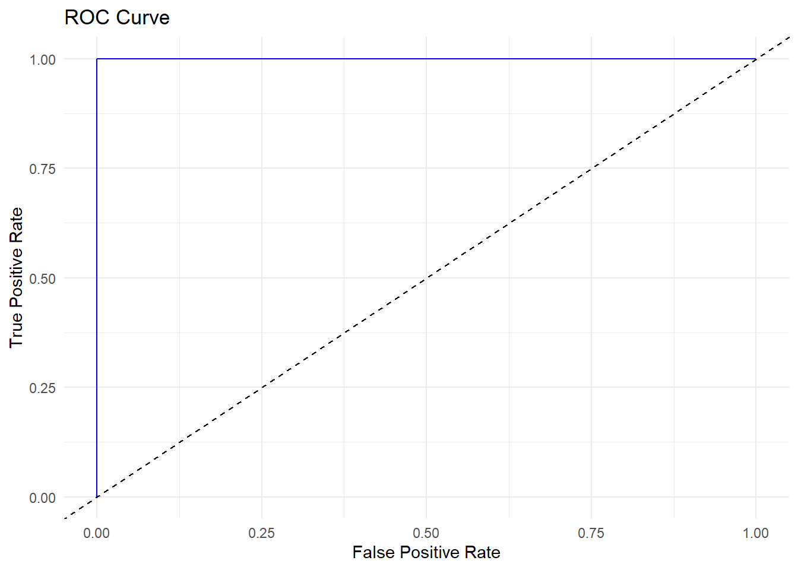
threshold <- 0.5
normalized_data$predicted_class <- ifelse(normalized_data$predicted_prob > threshold, 1, 0)
zero_one_loss <- sum(normalized_data$predicted_class != normalized_data$Preference)
cat('the zero one loss for our training set is:', zero_one_loss, '\n')the zero one loss for our training set is: 0 Conclusion
Summary
We can see that our logistic regression was able to perfectly predict the preferences for our training data. This is pretty worthless because the error on the training data greatly underestimates the true error of our prediction function, and I did not save a test set because my goal was to identify which variables were the most important in influencing someone’s preference of mountains or beaches. Unfortunately, I can’t really accomplish that because none of the coefficients were statistically significant, which we can see in the summary of the coefficients. The P values are all greater than 0.5 (which is much too high). We can make some conclusions based on the size of the coefficients themselves, however. For example, large coefficients such as swimming and sunbathing as preferred activities make sense (-7.039e+03 and -7.038e+03). It also makes sense that factors such as education and gender are very insignificant predictors.
Packages Used
Dplyr:
select
where
across
mutate
n_distinct
everything
ggplot2:
geom_histogram
geom_bar
geom_line
geom_abline